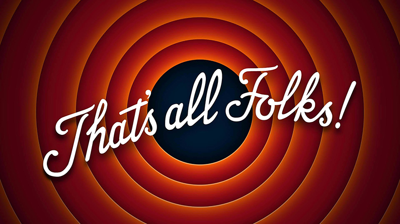

INTRODUCCIÓN HTML
MARÍA SOBRINO
1. Html boylerplate
La página tiene que tener una estructura basica para que sea compatible con el ordenador
2. Se pueden escribir los titulos en distintos tamaños
Este está escrito en h4
Este titulo está en h3
3. La cursiva y la negrita
Se puede escribir en cursiva con el comando em
y tambien se puede escribir en negrita con el comando strong
4. Lista de salto con br
Lista de salto con br:
esto podría ser
un ejemplo de
salto con br
5. Ejemplo de lista ordenada
Fotos de animales graciosos que podrian ser:
- La ardilla
- El mono
- El perro
6. Ejemplo de lista desordenada por puntos
Fotos de animales enfadados que podrian ser :
- El pello
- Elpajaro
- El gato
7. Imagenes sacadas de internet


6. Imagen local

MARÍA SOBRINO